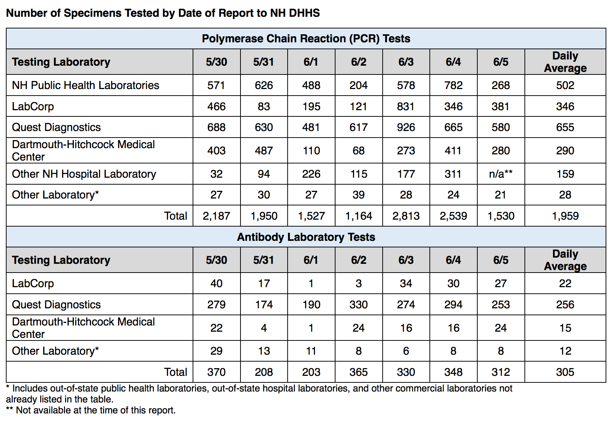

NH Data doesn't match
The NH DHHS report on tests per day doesn’t seem to match up with your test data numbers? 
qpmnguyen closed the issue on June 8, 2020 at 7:23 pm
qpmnguyen reopened this on June 8, 2020 at 7:29 pm
stale[bot] commented on June 23, 2020 at 7:59 pm
This issue has been automatically marked as stale because it has not had recent activity. It will be closed if no further activity occurs. Thank you for your contributions!
stale[bot] added the label stale on June 23, 2020 at 7:59 pm
stale[bot] commented on July 3, 2020 at 8:02 pm
This issue has been closed because it was stale for 15 days, and there was no further activity on it for 10 days. You can feel free to re-open it if the issue is important, and label it as “not stale.”
stale[bot] closed the issue on July 3, 2020 at 8:02 pm
Thank you very much for your issue @mm3875!
Unfortunately, this discrepancy is due to lags between the state’s public reporting dashboard and information that goes into making this table. If you can check out the daily screenshots we have at New Hampshire here (https://covidtracking.com/data/state/new-hampshire#historical), you can see that the state frequently updates new tests past our 4 pm EST publish time, where at certain points even until the early am the next day. This means that we often capture these increases later down the line as the state dashboard catches up. We are working on a solution internally to patch these numbers retroactively based on this information provided by the state.
Hope this helps!